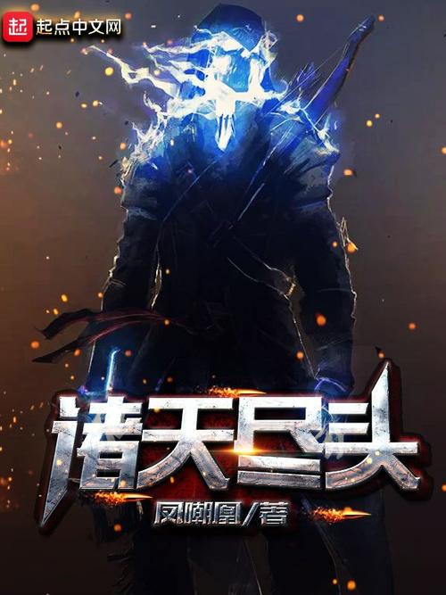

诸天尽头
作 者 : 凤朝凰
类 别 : 玄幻
一觉醒来，罗素脑海中就多出了一个可以穿梭诸天世界的系统。
杀手、怪兽、女巫、异形、魔鬼、神明……
无限的世界有无限的可能，亦有无限的历险，而踏破无限之人，必将留下属于自己的传说。
从平凡到不朽，在诸天的道路上寻觅尽头！
……
看着永无止尽的道路，罗素摸着系统的狗头，他手里只有抽奖得来的卡片……有点慌！
| 评价 | 无限流精品，主角有点近似无敌，不用在意战斗力的话，可以看的很开心。有些情节非常搞笑，但是如果你是想看主角一步步发育，那么请右拐去《轮回乐园》，本书战斗力系统早就不知道崩成什么样子了. |